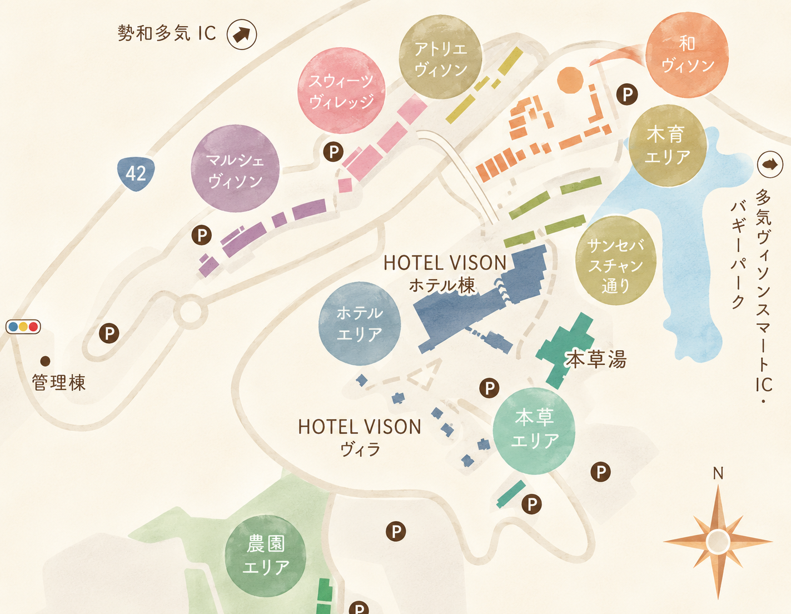
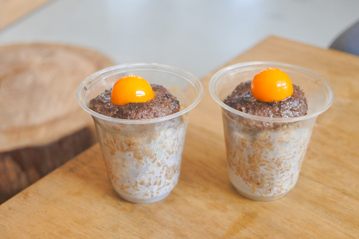
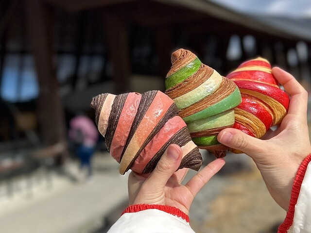
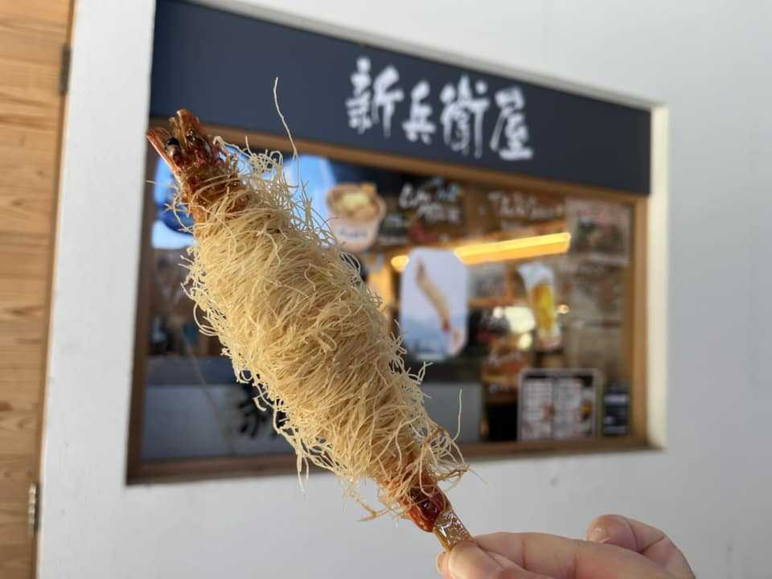
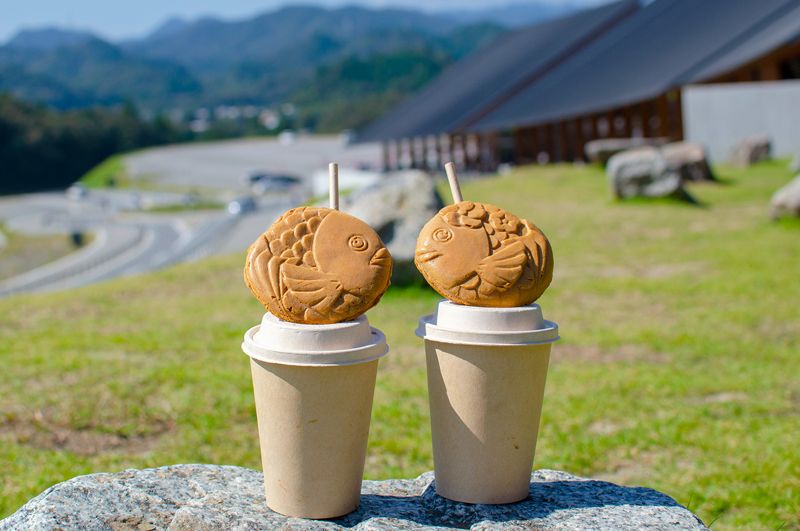
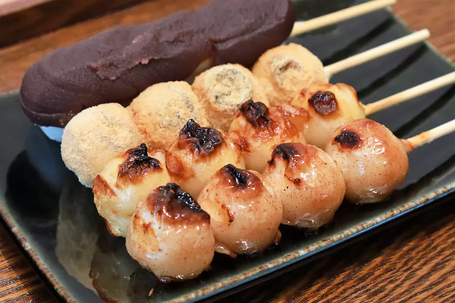
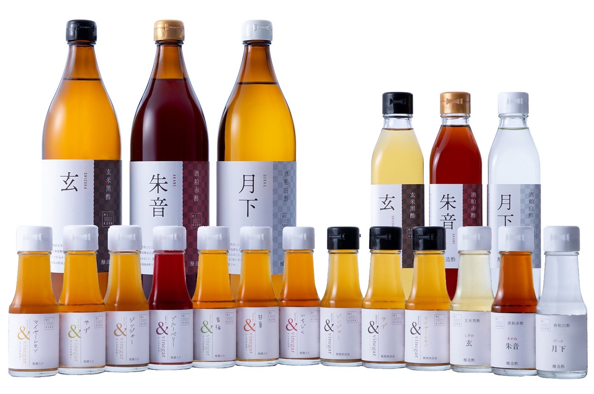

VISONエリアマップ
VISONはとても広い施設です。 お店や施設は複数のエリアに分かれているので、 気になるお店がどのエリアにあるかチェックしておくと回りやすいです😊

Googleマップ
おすすめ

マンハッタン(松飯炭)
炭火焼きハンバーグの上に卵黄が乗った、ビジュアル満点のどんぶり

VISON GRILL EIGHT
コクリコルージュのバイカラークロワッサン。

新兵衛屋
パリパリの海老の天ぷら

松阪 香肌屋
まるいたい焼き

井村屋
お団子やスイーツ

MIKURA Vinegary
お酢の専門店で、追い酢ができるソフトクリームもある。